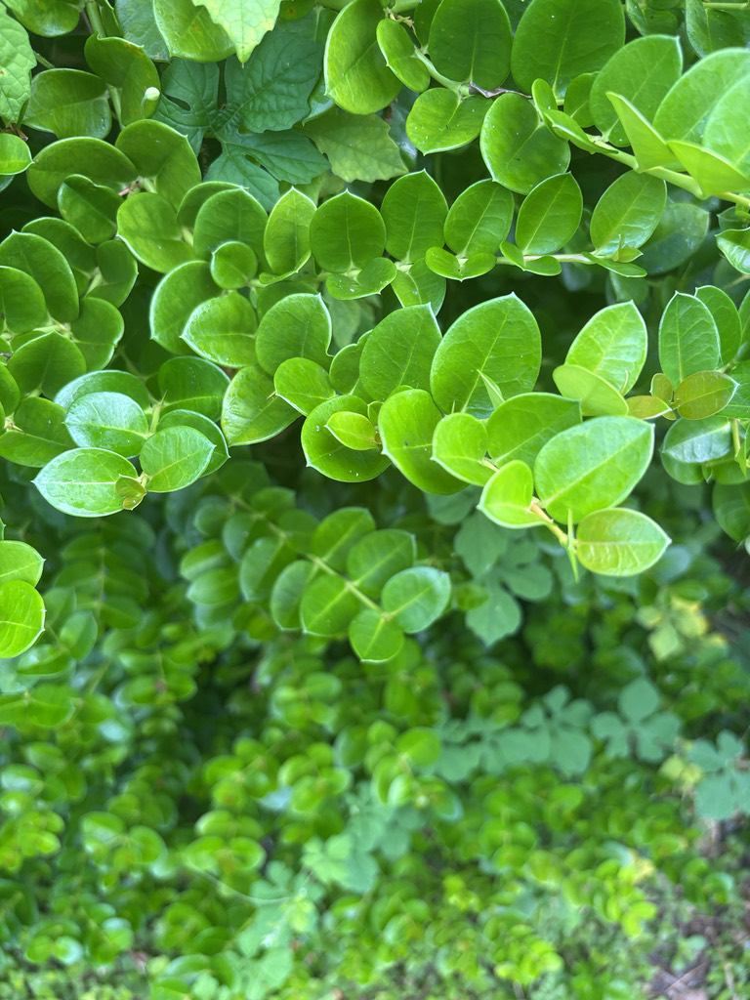

- The seeds are packed with natural oil — so much so that indigenous peoples and early Caribbean settlers would thread roasted kernels onto palm-frond splints and burn them like candles. A handful of cocoplum seeds was a reliable fire-starter long before matches existed.
- Why is it nicknamed 'Fat Pork'? In parts of the West Indies, the pale, fluffy pulp clinging to the seed inside a ripe cocoplum bears an uncanny resemblance to soft pork fat — exactly why Caribbean cooks gave it that unforgettable name. The nickname stuck across the region and followed the plant into Florida.
- Fruit color is wildly variable — the same species can ripen to white, pink, yellow, red, or deep purple-black, depending on ecotype and individual plant.
- The gopher tortoise is among cocoplum's most effective seed dispersers. The fruit is large enough that small songbirds can't swallow it whole, but tortoises can — and the hard pit passes through the gut intact, germinating faster because passing through a tortoise's digestive tract gently files down the tough seed coat (a process called scarification).
- Research has mapped where new cocoplum thickets sprouted almost perfectly onto tortoise movement pathways in South Florida preserves.
Cocoplum is native to coastal central and south Florida — with natural populations documented from roughly Cape Canaveral and Pasco County southward through the Keys — and its range extends through the Bahamas, West Indies, Mexico, Central America, and northern South America.
A closely related population also occurs across West and Central Africa, though taxonomists debate whether it represents the same species.
In Florida it is one of only two native members of the Chrysobalanaceae family, the other being gopher apple (Geobalanus oblongifolius). It has been widely cultivated as a hedge and ornamental throughout the peninsula and is now grown well north of its natural range in USDA Hardiness Zones 9B and higher.
- Cocoplum is recognized as having two ecotypes that behave quite differently in the landscape. The coastal ecotype is a low, spreading shrub — rarely above six feet — that roots where its branches touch the ground, forms dense thickets, and handles salt spray well. The inland ecotype grows upright, can reach 20 or more feet tall, puts on height quickly, and is far less salt-tolerant.
- The nursery trade has formalized these differences into named cultivars. 'Red Tip' and 'Green Tip' are both inland types, named for the color of their new growth; 'Horizontal' is the coastal type and is the form most often recommended for dune stabilization and low-maintenance coastal groundcover.
- Because seed-grown plants do not reliably reproduce named varieties, cultivars are propagated by cuttings or air-layering.
- The seeds inside the ridged stone are notably oil-rich — a trait that attracted traditional use across the plant's range long before modern lighting. Indigenous peoples and early Caribbean settlers would string roasted kernels onto palm-frond splints and burn them like candles, or use them as fire-starters.
- The genus name Chrysobalanus translates roughly from Greek as 'golden acorn,' a nod to the lustrous, seed-containing pit rather than the fleshy outer fruit.
The small white flowers, produced in clusters near the leaf bases intermittently all year, are a reliable nectar source for a diversity of bees — the Florida-Friendly Landscaping program singles out cocoplum as particularly attractive to native bees. The dense, year-round foliage provides excellent cover and nesting structure for birds and small mammals.
The fruit is eaten by birds and ground-dwelling wildlife, but the large pit makes it a better fit for bigger-bodied dispersers than for small songbirds. Gopher tortoises consume the fruit whole and pass the seed intact — and research has shown that tortoise gut-passage may actually speed germination while also moving seeds across the landscape.
This plant-tortoise partnership is an unusually well-documented example of how Florida's native shrubs and native wildlife depend on each other.
Propagation is by seed, stem cuttings, or air-layering. Seeds germinate slowly and do not reliably reproduce named cultivars, so cuttings and air-layering are the preferred methods for preserving specific varieties. Plants can also spread vegetatively: the coastal 'Horizontal' ecotype roots wherever its creeping branches contact the ground.
Small, white to greenish-white, and aromatic but not showy. Flowers are produced in small branched clusters (cymes) near the leaf bases and appear intermittently throughout the year, with peak bloom in winter through spring.
A drupe — a fleshy fruit with a hard central pit, like a peach or plum — roughly 1 to 2 inches long, produced in clusters. Color varies widely from white and yellow to pink, red, and deep purple-black, depending on ecotype and individual. The soft, mildly sweet flesh surrounds a hard, ridged stone enclosing a single oil-rich seed.
Alternate, simple, broadly obovate to nearly round, and leathery — 1 to 3 inches long. Color is bright green, often with a reddish tint; new growth on the 'Red Tip' cultivar flushes a vivid maroon. Leaf tips end in a short, sharp point (cuspidate).
Stems are grayish-brown with conspicuous raised, elliptic lenticels (small pores in the bark). Multi-stemmed habit typical; coastal forms are low and spreading while inland forms are more upright. No thorns or spines.
The rounded, leathery leaves are the first thing to notice — bright green with a slight sheen and a short, sharp pointed tip, arranged alternately along arching stems. On the 'Red Tip' cultivar, look for vivid maroon new growth at the branch tips; the older foliage underneath is standard green.
Look near the leaf bases for the small white flower clusters and, when fruiting, for the clustered drupes that may range from white to deep purple on the same shrub. The bark on older stems shows distinctive raised pale lenticels. Coastal-form plants spread low and horizontal; inland types grow taller and more upright.
The ripe fruit is edible — the flesh has been made into jam and jelly across the plant's tropical range, and the oil-rich seed inside the stone can be eaten raw or cooked once removed from its hard casing. No toxicity to people or pets has been documented. This is a harmless plant: handle and enjoy it without concern.
Although cocoplum is a well-behaved Florida native, the same species has become a documented invasive in Hawaii, Fiji, French Polynesia, and several other tropical Pacific islands where it was introduced as an ornamental. Its native-range credentials here are solid; the invasive file belongs to other latitudes.
At Bradenton's Zone 10A latitude, cocoplum is at the northern edge of reliable cold-hardiness. Established plants typically recover from brief cold events, but extended freezes near or below 28 degrees F can cause significant defoliation or dieback. The coastal 'Horizontal' form may be slightly hardier in practice than the tall inland types due to its lower canopy profile.

- © Randall Carter (CC-BY-NC), via iNaturalist